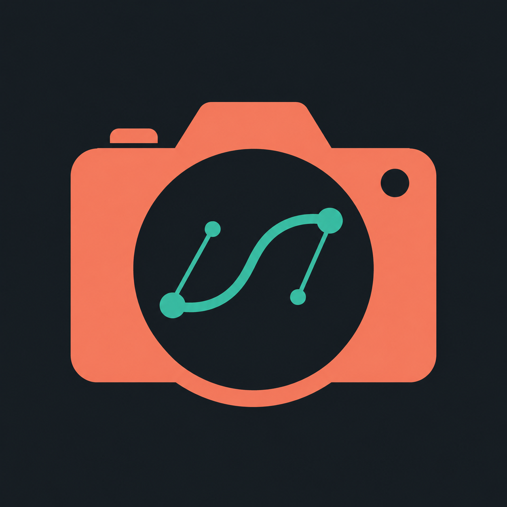

Candidate 2 selected by Tyler. Each uses a recognizable camera and an artist-facing deformation motif. Circular and 32px previews use the original generated pixels.
Back to current UI review
Generation prompt
